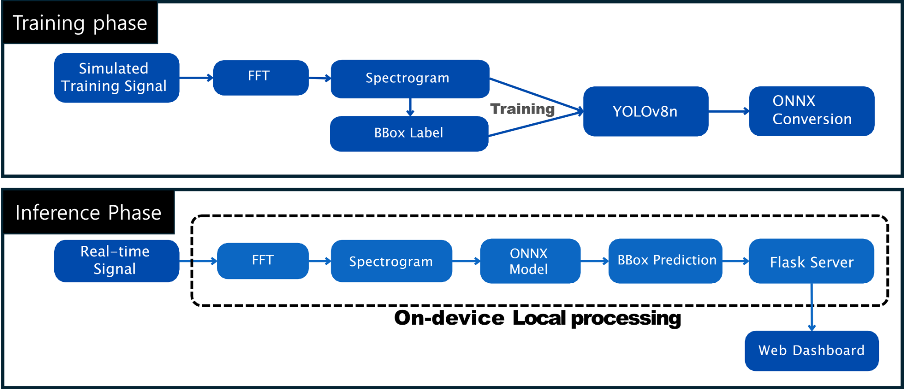
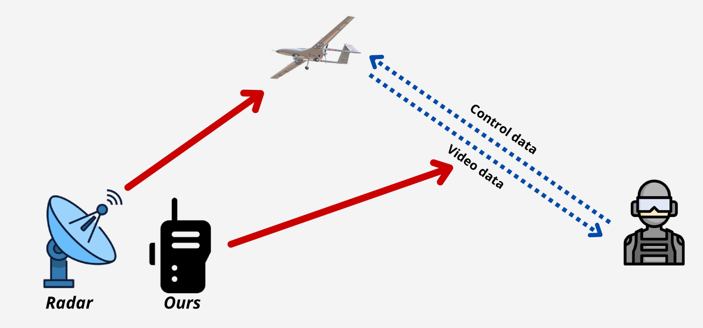
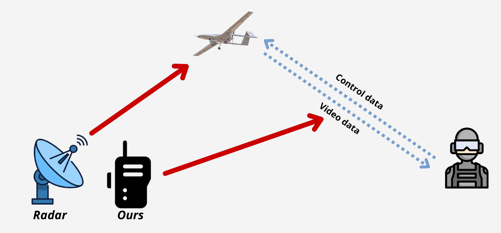
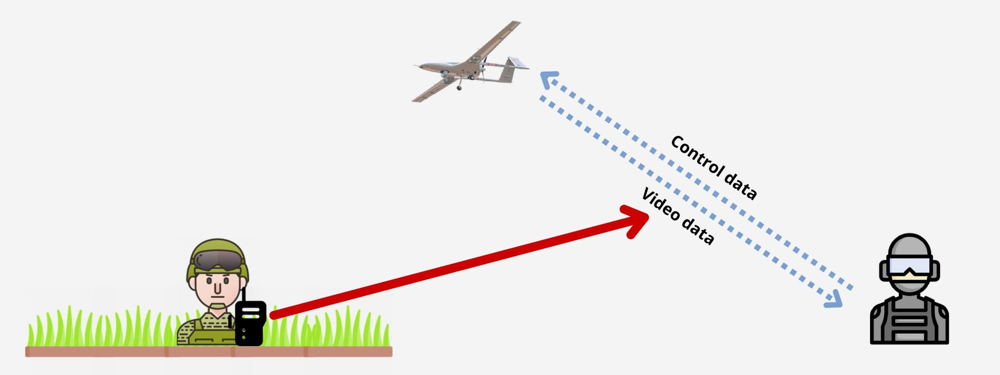
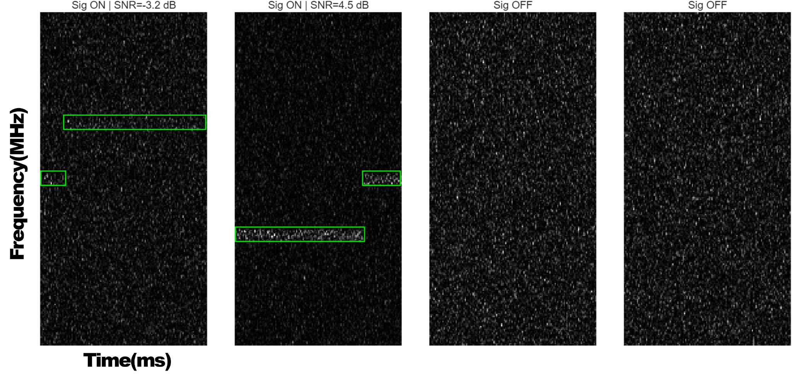
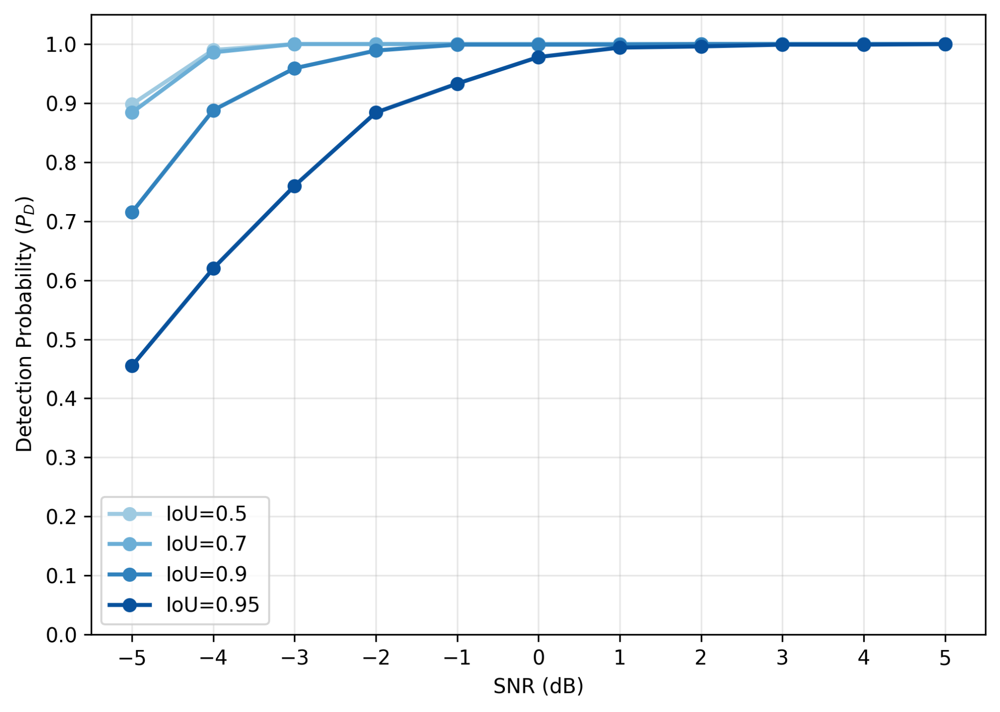
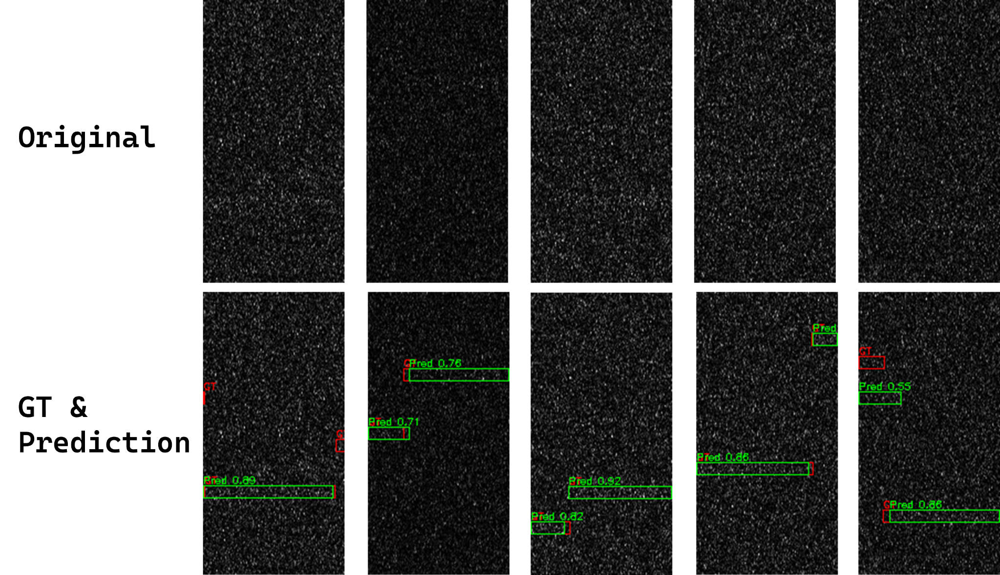
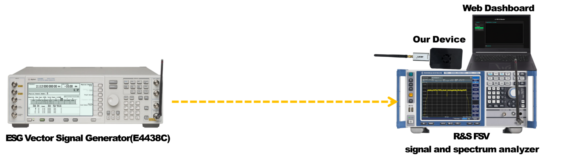
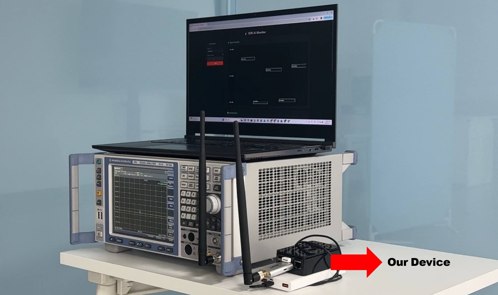
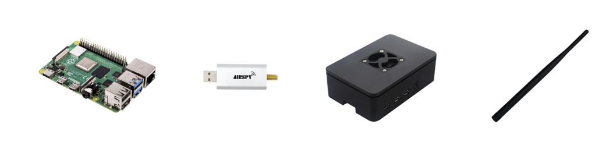

Design and Implementation of an AI-Based Spectrum Sensing System
조성환, 최범영, 정의림
국립한밭대학교 · ACE Lab
Paper /
Demo Video 1 /
Demo Video 2

그림 1. 제안하는 인공지능 스펙트럼 센싱 파이프라인
Summary
[연구 개요]
- 드론 및 비인가 IoT 증가로 주파수 호핑·저전력 송신 기반 저피탐(LPI) 통신 신호의 실시간 탐지 필요성 증대
- AI 기반 스펙트럼 센싱과 온디바이스 AI를 적용하여 낮은 SNR 환경에서도 적대적 통신 신호를 실시간으로 탐지하는 시스템 구현
[연구 과정]
- 주파수 호핑 기반 저피탐 통신 신호 환경 시뮬레이션 구성
- FFT 기반 스펙트로그램 생성 및 AI 학습 데이터 구축
- AI 기반 통신 신호 탐지 모델 학습 및 온디바이스 환경 적용
- 실제 실험 환경에서 저피탐 신호 탐지 검증 및 성능 평가
[연구 결과]
- SNR −3 dB 환경에서도 약 97.8%의 탐지 성능을 유지하였으며, 기존 분석 장비로는 식별이 어려운 조건에서도 안정적인 주파수 호핑 신호 탐지가 가능함을 확인
- 시뮬레이션 및 실제 환경에서 실시간 신호 탐지와 주파수 식별 확인
- 온디바이스 환경에서 실시간 처리와 웹 기반 모니터링이 가능한 탐지 시스템 구현
[활용 계획 및 기대 효과]
- 국방·보안·전파관리 분야의 휴대형·현장형 스펙트럼 감시 장비로 확장
- 탐지된 전파 패턴의 기록·분석을 통해 비인가 신호 추적 및 전파 포렌식 활용 기반 마련
- 실시간 AI 기반 스펙트럼 센싱을 활용한 적군 주파수 호핑 추적 및 적응형 재밍 신호 생성으로 확장
Background
자폭 드론이란?
- 장시간 체공 → 표적 확인 → 돌진·폭발하는 일회용 공격 무기
- 우크라이나·중동 등 최근 분쟁에서 사용 빈도 급증
- 자폭 드론 위협에 대비하기 위한 조기 탐지 체계의 중요성 증대
그림 2. 최근 전장에서 활용되는 저고도·저속 비행체의 사례
무선 통신 신호 기반 탐지
- 저고도·저속 비행과 작은 레이더 반사면적(RCS)으로 레이더 탐지가 어려움
- 드론과 조종자 사이의 무선 통신 신호를 포착하는 방식 활용
- 이를 위한 스펙트럼 센싱 기반 탐지 기법 적용

그림 3. 표적 자체 탐지와 무선 통신 신호 탐지 접근
저피탐 통신 신호의 탐지 문제
- 빠른 주파수 호핑과 저전력 송신을 활용한 무선 통신 신호 탐지 회피
- 기존 에너지 탐지 기반 센싱만으로는 낮은 SNR 조건에서 신호 식별이 어려움
- 인공지능 기반 스펙트럼 센싱을 통한 문제 해결 시도

그림 4. 저전력 송신과 주파수 호핑을 이용한 신호 탐지 회피
Requirements and Goals
- 현장에서 저전력으로 안정적인 동작
- AI가 스펙트럼을 실시간 분석하여 호핑·저전력 신호를 즉시 탐지·식별
- 외부 서버 연결 없이 온디바이스만으로 처리

그림 5. 외부 서버에 의존하지 않는 온디바이스 탐지 시나리오
Method
시뮬레이션 기반 학습
- 주파수 호핑 신호와 잡음을 합성하고 FFT 기반 스펙트로그램으로 변환
- 신호가 존재하는 시간·주파수 구간을 bounding box로 라벨링
- 생성한 학습 데이터로 YOLOv8n 객체 탐지 모델 학습

그림 6. 학습에 사용한 스펙트로그램 이미지 예시
실시간 온디바이스 추론
- SDR로 실제 RF 신호를 수신하고 학습 단계와 동일한 방식의 스펙트로그램으로 변환
- ONNX 포맷의 YOLOv8n 모델로 신호의 존재 여부와 시간·주파수 위치 추정
- 신호 수신부터 스펙트로그램 생성, 객체 탐지 및 결과 시각화까지 Raspberry Pi에서 수행
- Flask 기반 웹 대시보드로 탐지 결과를 실시간 시각화
Experimental Results
정량적 성능 평가
- 시뮬레이션 환경에서 SNR 변화에 따른 신호 탐지율 측정
- 평가 조건: 오탐률 0.1% 이하, 정답과 예측 bounding box 사이의 IoU 0.9 이상
- SNR −3 dB 환경에서도 약 97.8%의 탐지 성능 유지

그림 7. 오탐률 0.1% 이하에서 SNR 변화에 따른 신호 탐지율
정성적 성능 평가
- SNR −5 dB 환경에서는 신호 에너지가 잡음 바닥과 유사하여 Analyzer 화면에서 호핑 신호의 육안 식별이 어려움
- 동일 조건에서 제안 시스템은 주파수 호핑 신호를 안정적으로 탐지하고, 탐지된 시간·주파수 구간을 bounding box로 시각화

그림 8. SNR −5 dB 환경에서의 정성적 탐지 결과
Experimental Setup
- Signal Generator로 주파수 호핑 신호를 매우 낮은 전력으로 송출하여 저피탐(LPI) 실험 환경 구성
- Spectrum Analyzer와 제안 탐지기를 동일한 수신 위치에 배치하여 관측
- Analyzer 화면에서 신호를 육안으로 구분하기 어려운 낮은 SNR 조건에서 탐지 성능 확인

그림 9. 실제 환경 실험 구성

그림 10. Spectrum Analyzer 인근에 배치한 온디바이스 탐지기
System Components and Cost
- Raspberry Pi 4와 Airspy Mini를 중심으로 구성
- 별도의 GPU 서버나 외부 네트워크 연결 없이 신호 수신·스펙트로그램 변환·모델 추론·결과 시각화 수행

그림 11. 온디바이스 탐지 시스템의 하드웨어 구성품
※ 가격은 프로젝트 제작 당시의 구매 가격을 기준으로 하며,
구매 시점과 판매처에 따라 달라질 수 있습니다.
Demo Videos
Expected Benefits
핵심 기대 효과
- 비인가 무선 신호 및 드론·IoT 통신 탐지에 활용
- 국방·보안·전파관리 분야의 휴대형·현장형 스펙트럼 감시 장비로 확장
- 전파 패턴의 기록·분석을 통한 비인가 신호 추적 및 전파 포렌식 활용 기반 마련
확장 적용 분야
- 적응형 재밍: 실시간 AI 기반 스펙트럼 분석으로 적군 주파수 호핑을 추적하여 적응형 재밍 신호 생성에 활용 가능
- 스마트 공장: 산업용 로봇·IoT 간 무선 간섭을 실시간 감시하여 공장 자동화 시스템의 안정적인 운영 지원
- 대규모 행사장: Wi-Fi 혼잡과 무선 간섭을 실시간 감지하여 안정적인 네트워크 운영 지원
ACE Lab, 국립한밭대학교